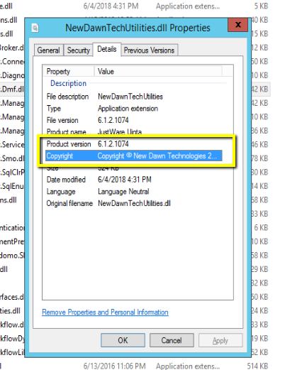

-
Open the windows Services app
-
Locate the Windwos Service in Question
-
Right click, and select properties on the service row
-
Find the executable path, and navigate there
-
Once there, find a dll file that is copywritten to New Dawn Technlogies (you may have to try a couple). The copywrite can be found by following the next steps
-
Right click on the dll and select properties
-
Open the details panel

-
Check the product version. This will be a build version which needs to match the build version from the maintenance console. This is also where you'll find the copywrite information.
